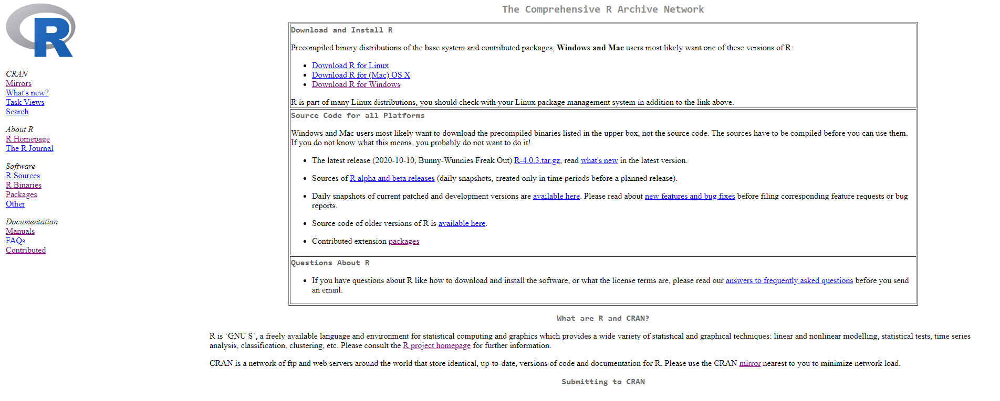
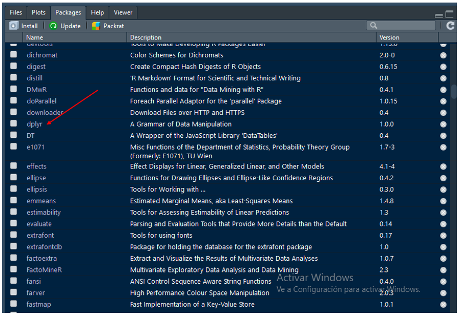
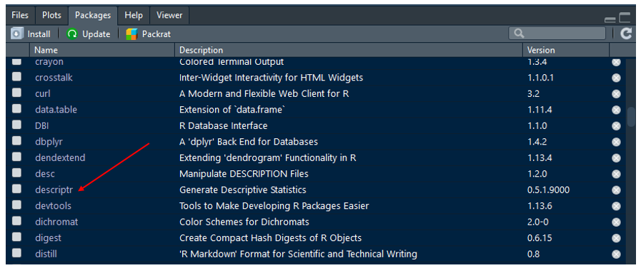
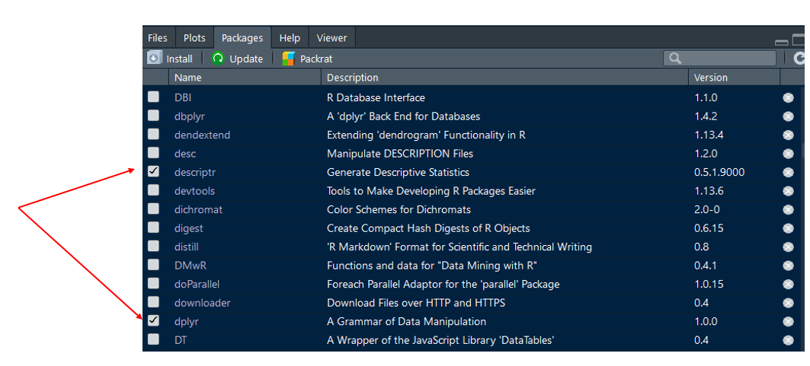

3.1 Paquetes en R
Hasta ahora, a lo largo de este curso, hemos acudido al uso de un conjunto de funciones -cada vez con más frecuencia- que hacen parte del lenguaje desde el momento de su instalación. Estas librerías se les conoce como librerías básicas del lenguaje y su gestión y manipulación se encuentra a cargo del equipo que soporta R a nivel mundial; es decir, no pueden ser manipuldos por ninguno de nosostros. No obstante, a partir de estos paquetes y de otras herramientas disponibles, la comunidad de usuarios de R ha venido creando, desde inicios del año 2000, nuevos paquetes de R para diversos propósitos los cuales, en buena medida, han sido los grandes responsables del creciemiento y el auge que hoy ha alcanzado este lenguaje en el contexto mundial.
La cantidad de paquetes disponibles en R, como se ilustra en la siguiente figura extraída del blog Revolutions, ha venido creciendo de manera exponencial. De ningún paquete disponible en el Repositorio CRAN47 en el año 1998 pasamos a disponer de alrrededor de 9.000 paquetes en el año 2016 y hoy a contar con cerca de 16.000 paquetes48 en dicho repositorio.
Representación gráfica de un vector
3.1.1 Filosofía de un paquete
La primeras preguntas que pueden surgir al momento de hablar de paquetes en R es el por qué, el para qué, cómo están estos conformados y cómo podemos gestionarlos. Es decir, por qué es importante disponer de paquetes en R, para qué son úliles, qué características estos poseen y cómo debemos gestionarlos. Para dar un principio de respuesta rápido y ligero a estas inquietudes acudiremos a una analogía contenida en una de las escenas de la primera de las peliculas de la saga Matrix. La escena en mención se presenta en el siguiente video.
En esta escena de la película Matrix, la protagonista Trinity, requiere pilotear un helicoptero B-212 pero no cuenta con las competencias para hacerlo. Se comunica con el operador Tank que se encuentra ubicado en la nave Nabucodonosor y le pide que le cargue las competencias requeridas para poder pilotear este tipo de aeronave. Paso seguido, Trinity acompañada de Neo, hace uso de las nuevas competencias adquiridas para pilotear el helicoptero y acuden al rescate de Morfeo quien se encuentra bajo custodia del agente Smith y dos de sus compañeros.
El contenido de esta escena de la película Matrix refleja una de las grandes aspiraciones de la humanidad -adquirir nuevos conocimientos a través de la inserción en nuestros cuerpos de un artefacto externo-; así mismo, refleja de menara precisa la filosofía existente atrás de un paquete disponible en R. En primer lugar, un paquete es importante porque nos permite disponer en su interior de un conjunto de funciones (cómo están conformados) útiles para un propósito requerido en el mundo de la gestión de datos (para qué y por qué) -en la escena de la película el paquete requerido era aquel que permitia adquirir las funcionalidades necesarias para pilotear un helicoptero B-212. Es decir, un paquete de R está conformado por un conjunto de funciones requeridas y útiles para analizar/abordar los datos desde una perspectiva deseada: descriptiva, correlacional, explicativa, predictiva, etc. En segundo lugar, la gestión de paquetes en R exige la disposición de tres elementos centrales: el nombre del paquete requerido, el lugar en donde este se encuentra disponible y el medio de comunicación que se empleará para disponer de dicho paquete en nuestros entornos de trabajo.
El nombre del paquete requerido depende del objetivo buscado con los datos disponibles y no existe, en principio, un mecanismo estándar para su localización: la web, las redes sociales, los colegas, la popularidad, el prestigio del o los autores, la fuente de almacenamiento, su uso en artículos científicos, entre otros, hacen parte de algunos de los caminos a transitar a la hora de seleccionar y hacer uso de un paquete en R. En la escena de la película Matrix bajo estudio era claro el nombre o la intención del paquete requerido: aquel que dipusiera de las funciones que permitan pilotear un helicoptero B-212. El lugar donde un paquete se encuentra disponible, como veremos en el siguiente apartado, se reduce a tres contenedores principales: CRAN, GitHub y Bioconductor; en la escena de nuestra película el lugar de almacenamiento del paquete requerido es la nave Nabucodonosor. Finalmente, el medio de comunicación empleado para descargar paquetes en R, como se ilustrará en la siguiente sección, dependerá del repositorio en donde estos se encuentran almacenados; en la escena de la película los medios de comunicación son el teléfono usado por Trinity y Tank como receptor de su llamada desde la nave Nabucodonosor.
3.1.2 Importar paquetes
Los paquetes en R, como se anunció previamente, se encuentran almacenados fuera de nuestros equipos/computadoras en repositorios a los cuales podemos acceder si disponemos, como mínimo, de una conexión a internet o del archivo fuente de dichos paquetes. Aunque existen varios lugares en donde es posible almacenar paquetes de R, existen básicamente tres grandes fuentes/repositorios de almacenamiento de estos: CRAN, GitHub y Bioconductor. A continuación, se decribe la forma como podemos acceder y descargar a nuestras computadoras paquetes disponibles en CRAN Y GitHub49.
para ilustrar la utilidad del trabajo con paquetes en R, supongamos que estamos interesados en encontrar una función que nos permita extraer el número de filas de un marco de datos data.frame en R así como explorar con mayor detalle el contenido de las variables que hacen parte de un marco de datos. Con lo avanzado hasta ahora en este documento, sabemos que las funciones nrow(), str() y summary() existentes en la base del lenguaje; es decir, disponibles al instalar el programa, cumplen con los propósitos deseados: la función nrow() permite conocer el número de individuos disponibles en un marco de datos data.frame y las funciones str() y summary() presentan algunas características de las variables que conforman un marco de datos.
Por experiencia, supongamos que sabemos que la función count() disponible en el paquete dplyr y la función ds_summary_stats() diponible en el paquete descriptr, nos permiten cumplir con los objetivos buscados: encontrar una alternativa a las funciones nrow(), str() y summary() disponibles en la base del lenguaje. Así mismo, supongamos que el paquete dplyr se encuentra almacenado en CRAN y el paquete descriptr se encuentra almacenado en GitHub. En el siguiente apartado se presenta la forma como podemos descargar a nuestros computadores o lugares de almacenamiento de R, el contenido de un paquete disponible en los respositorios CRAN y GitHub.
3.1.2.1 Paquetes en CRAN
La Red Integral de Archivos R (The Comprehensive R Archive Network), conocida popularmente como CRAN, es la fuente oficial de almacenamiento de paquetes de R la cual cumple con los requisistos mínimos de calidad exigidos al momento de crear y disponer un paquete que puede ser usado por la comunidad de usuarios de este lenguaje. Este repositorio, que se encuentra disponible en el sitio web oficial de R y cuyo home se presenta en la imagen de abajo, es administrado por un número importante de expertos que velan, entre otros aspectos, por la integridad del lenguaje y por la exigencia, la revisión y el cumplimiento de un conjunto mínimo de requisitos que debe cumplir un paquete previo a su publicación/diposición y uso por parte de la comunidad desde CRAN. Por lo anterior, al instalar paquetes en R, la norma es que estos sean descargados desde CRAN.

Para instalar un paquete desde CRAN se requieren dos elementos centrales: el nombre del paquete que será instalado y el mecanismo de comunicación. En el ejemplo que se propuso previamente, sabemos que el paquete de interés que deseamos instalar es dplyr en razón a que este dispone de la función count() útil para conocer el número de filas de un marco de datos data.frame(); es decir, ya conocemos el nombre del paquete que deseamos descargar/instalar desde CRAN. En segundo lugar, el mecanismo de comunicación requerido para instalar un paquete desde CRAN es la función install.packages()50. Una vez que disponemos del nombre del paquete que será instalado desde CRAN y de la función que nos permite realizar la comunicación con dicho repositorio, se procede a usar estos elementos para poder descargar/instalar dicho paquete en nuestros equipos. Al usar la función install.packages() se recomienda, aunque no es estrictamente necesario, que esta esté acompañada del argumento dependencies = TRUE51. Es decir, la instrucción (línea de comando) requerida en R para instalar desde CRAN el paquete dplyr en nuestros computadores es52:
Una vez que hemos compilado la anterior línea de comando y el proceso de instalación del paquete requerido se ha adelantado de manera satisfactoria, el paso a seguir es verificar que este efectivamente se encuentra disponible en nuestros equipos. Para ello, si nos encontramos trabajando desde la IDE de Rstudio53, procedemos a ir a la pestaña llamada Packages54 ubicada generalmente en la parte inferior derecha (entre las pestañas Plots y Help) de esta IDE y verificar que efectivamente este se encuentra disponible. En la imagen que se presenta a continuación, se ilustra que el paquete dplyr fue efectivamente instalado en el equipo de trabajo (ver parte final de la flecha roja).

3.1.2.2 Paquetes en GitHub
Un repositorio alternativo a CRAN de almacenamiento y disposición de paquetes en R es GitHub55. GitHub es una alternativa a CRAN empleada por un número importante de autores de paquetes la cual se caracteriza por disponer de las últimas versiones disponibles de estos, de guardar copias de paquetes que se encuentran almacenados en CRAN, de paquetes que se encuentran en fase de desarrollo o pruebas o de paquetes que cumplen algunas funcionalidades particulares y que no han sido aún presentados ante CRAN para su disposición en dicho repositorio.
Los paquetes de R disponibles en GitHub, a diferencia de los disponibles en CRAN, no han sido sometidos a pruebas y controles de calidad por lo que el uso de estos está sujeto a la verificación de este requisito por parte de los usuarios lo cual, en términos generales, se da a través del conocimiento y prestigio de los autores o el expresado por la comunidad. Por norma, se debe acudir a descargar paquetes desde GitHub siempre y cuando estos no estén disponibles en CRAN o cuando allí no se disponga de las versiones más recientes situación que es empleada por usuarios avanzados de estos paquetes o del lenguaje en general.
Para instalar un paquete desde GitHub, previamente debemos instalar desde CRAN el paquete llamado devtools, el cual dispone de la función install_github(" ") la cual cumple el rol de mecanismo de comunicación entre R y GitHub. Para instalar este paquete, procedemos a ejecutar/compilar en R la siguiente línea de comando56.
Una vez se ha instalado el paquete devtools en nuestro entorno de trabajo, se debe disponer de este en la memoria de nuestros equipos para que puedan ser usadas sus funciones. Esto se garantiza ejecutando/compilando la siguiente línea de comando57.
Después de haber instalado el paquete devtools y de haber dispuesto este en la memoria de nuestro equipos a través del uso de la función library(), estamos preparados para instalar cualquier paquete de R que se encuentre disponible en GitHub. Para ello, retornemos a nuestro ejemplo en donde deseamos hacer uso de la función ds_summary_stats() la cual se encuentra disponible en el paquete descriptr almacenado en GitHub58. La función ds_summary_stats(), como se mencionó previamente, nos permite presentar un resumen con mayor detalle del contenido de una variable disponible en un marco de datos o data.frame. Para poder hacer uso de la función ds_summary_stats() debemos instalar, desde GitHub, el paquete descriptr lo cual se logra al compilar en R la siguiente línea de comando.
En la anterior línea de comando, el operador :: indica que estamos haciendo uso de la función install_github() del paquete devtools y el texto rsquaredacademy hace referencia al nombre del usuario en GitHub del autor59 del paquete descriptr. Una vez ha finalizado el proceso de instalación desde GitHub del paquete descriptr en R, al igual que el caso del paquete dplyr instalado desde CRAN, procedemos a verificar, como se muestra en la figura de abajo, que este quedó efectivamente instalado dentro del panel Packages de Rstudio.

3.1.3 Usar paquetes
En el apartado anterior aprendimos a importar paquetes desde CRAN y GitHub y a verificar que estos se encuentran disponibles en el panel Packages de Rstudio. En esta sesión haremos uso de una de las funciones contenidas en cada uno de estos paquetes para cumplir con los propóitos deseados: extaer el número de filas de un data.frame y explorar con mayor detalle el contenido de sus variables. Para ello, debemos explicar un paso adicional requerido en R para hacer uso de las funciones disponibles dentro de un paquete previamente descargado desde CRAN, GitHub o cualquier otro repositorio.
Al momento de descargar un paquete en R, como se mostró previamente, este queda almacenado en nuestros equipos (ver pestaña Packages de Rstudio) pero el mismo no queda disponible para ser usado en nuestros Scrips a menos que le digamos a R lo contrario. Para ello, debemos hacer uso de la función library() la cual nos permite dedirle al lenguaje que vamos a cargar en la memoría de nuestros equipos sesiones de trabajo los paquetes que contienen las funciones de interés para nuestros trabajos. A continmuación, se presentan las líneas de código requeridas para cargar los paquetes dplyr y descriptr.
Una vez se han compilado/ejecutado las anteriores dos líneas de comando, los paquetes en mención han sido cargados a la memoría de nuestros equipos y sus funciones pueden ser empleadas en los propósitos deseados. Para verificar que estos han sido fectivamente cargados, podemos acudir nuevamente al panel Packages de Rstudio y verificar que estos, además de estar allí almacenado, ahora aparecen marcados/seleccionados en el recuadro de su parte izquierda como se ilustra en la siguiente imagen.

Finalmente, después de haber descargado desde CRAN y GitHub los paquetes dplyr y descriptr, respectivamente y de haberlos cargado en la memoría de nuestros equipos a través de la función library(), podemos proceder a usar las funciones contenidas dentro de dichos paquetes. En primer lugar, procederemos a emplear la función count() del paquete dplyr con el fin de determinar el número de filas/individuos del marco de datos iris60. A continuación, haciendo uso del conjunto de datos iris y de la función count() del paquete dplyr , se determina el número de registros (individuos) de dicho conjunto de datos.
Ejemplo. Haciendo uso de funciones de un paquete en R descargado desde CRAN
## n
## 1 150En número de filas/individuos del conjunto de datos iris, como se sabe y se acaba de presentar, es de 150 y para su cáculo hemos acudido a la función count() del paquete dplyr() cuyo resultado es equivalente a haber empleado la línea de comando nrow(iris) de la base de R.
Además de conocer el número de registros del marco de datos iris, como se enunció previamente, estamos interesados en conocer con mayor detalle las características de una variable disponible en un marco de datos el cual, para propósitos académicos, hemos decidido que sea la variable Sepal.Length del conjunto de datos iris. A continuación, haciendo uso del conjunto de datos iris y de la función ds_summary_stats() del paquete descriptr , se describe con mayor detalle el contenido de la variable Sepal.Length61.
Ejemplo. Haciendo uso de funciones de un paquete en R descargado desde GitHub
## ---------------------------- Variable: Sepal.Length ----------------------------
##
## Univariate Analysis
##
## N 150.00 Variance 0.69
## Missing 0.00 Std Deviation 0.83
## Mean 5.84 Range 3.60
## Median 5.80 Interquartile Range 1.30
## Mode 5.00 Uncorrected SS 5223.85
## Trimmed Mean 5.82 Corrected SS 102.17
## Skewness 0.31 Coeff Variation 14.17
## Kurtosis -0.55 Std Error Mean 0.07
##
## Quantiles
##
## Quantile Value
##
## Max 7.90
## 99% 7.70
## 95% 7.25
## 90% 6.90
## Q3 6.40
## Median 5.80
## Q1 5.10
## 10% 4.80
## 5% 4.60
## 1% 4.40
## Min 4.30
##
## Extreme Values
##
## Low High
##
## Obs Value Obs Value
## 14 4.3 132 7.9
## 9 4.4 118 7.7
## 39 4.4 119 7.7
## 43 4.4 123 7.7
## 42 4.5 136 7.7Los resultados expuestos anteriormente, extraídos haciendo uso de la función ds_summary_stats() del paquete descriptr, nos permite describir con un alto grado de detalle el comportamiento de una variable. Por ejemplo, a partir de los resultados expuestos, podemos decir que la variable Sepal.Length no contiene datos faltantes, tiene una media (promedio) de 5.84, una mediana de 5.80, una moda de 5.0, un coeficiente de asimetría de 0.31, una curtosis de -0.55, una varianza de 0.69, un rando de 3.60, un valor máximo de 7.90, un valor mínimo de 4.30, un percentil 25 de 7.25, un percentil 5 de 4.60, entre otras medidas disponibles. Desde luego, con las funciones básicas del lenguaje R, no podemos extraer una caracterización con el nivel de detalle que nos ofrece la función ds_summary_stats() del paquete descriptr.
En conclusión, las funciones disponibles en los paquetes que la comunidad de R ha venido creando de manera proactiva durante las últimas dos décadas y almacenando en los respositorios CRAN y GitHub, principalmente, nos permiten acceder a funcionalidades útiles para una gestión óptima y moderna a la hora de trabajar con datos.
3.1.4 Explorar paquetes
La gestión de paquetes en R cuenta, en la base del lenguaje, con un número importante de funciones que nos permiten explorar, entre otros aspectos, la lista de paquetes disponibles en CRAN, las rutas de ubicación de los paquetes instalados en nuestros espacios de trabajo, las librerías descargadas y las instaladas en la memoria de las sesiones de trabajo, la descripción de los paquetes instalados, los manuales disponibles en la web para cada uno de los paquetes disponibles, el versionamiento de los paquetes disponibles así como las funciones contenidas en cada uno de los paquetes instalados en los espacios de trabajo. A continuación, se presenta un listado preliminar y ligero de funciones útiles para la exploración de paquetes en R. Invitamos a los lectores a compilar estas líneas de comando y a explorar, analizar y realizar un ejercicio de entendimiento de los resultados derivados de la implementación de cada una de estas funciones líneas de comando.
# Total de paquetes disponibles en CRAN
available.packages()
# Vista de tabla con la totalidad de paquetes disponibles en CRAN
View(available.packages())
# Total de paquetes disponibles en CRAN
nrow(available.packages())# Descripción de librerías instaladas en el equipo
installed.packages()
# Total de librerías instaladas en el equipo
nrow(installed.packages())
# Primeras 5 librerías instaladas en el equipo
head(installed.packages())
# Últimas 5 librerías instaladas en el equipo
tail(installed.packages())
# Vista de tabla con librerías instaladas en el equipo
View(installed.packages())# Viñetas disponibles - tutoriales
vignette()
# Tutoriales disponibles en la web para los paquetes descargados en el equipo
browseVignettes()
# Tutoriales web disponibles para un paquete
# Ejemplo. Paquete dplyr
browseVignettes(package = "dplyr")Además de este reposirorio, como veremos más adelante, existen otros en donde se almacenan paquetes como, por ejemplo, GitHub.↩︎
Con corte a 12 de octubre de 2020, existe un total de 16.396 paquetes disponibles en el repositorio CRAN -ver sección Packages-↩︎
En este documento, dado el alcance del mismo, no se presentan ejemplos sobre la forma de descargar paquetes disponibles en Bioconductor los cuales, para aquellos interesados, se centran principalmente en la gestión de datos de naturaleza biológica (bioestadística)↩︎
La función
install.packages()es a CRAN como lo son el teléfono usado por Trinity y Tank como receptor de su llamada desde la nave Nabucodonosor en la escena de la película Matrix que se presentó al inicio de esta sesión↩︎Este argumento es empleado por la función
install.packages()para instalar aquellos paquetes empleados por el o los paquetes que deseamos instalar; en nuestro caso dplyr. En conclusión, un paquete en R puede hacer uso de funciones disponibles en otros paquetes hecho que exige que al momento de su instalación deban ser instalados también aquellos paquetes de los cuales este depende para su buen funcionamiento.↩︎Invito a los lectores a complilar esta línea de comando en sus programas/scripts la cual, como podrán observar, tardará algunos segundos o incluso minutos en ejecutarse.↩︎
Para aquellos usuarios que no hacen uso de Rstudio para el trabajo con R, la función
.libPaths()les indicara las rutas de trabajo en donde se encuentran instalados los paquetes disponibles en nuestra sesiones de R. Al ingresar a estas rutas se puede verificar qué paquetes de R fueron instalados y se encuentran disponibles para ser empleados. Otra alternativa es usar la línea de comandoView(installed.packages())y verificar que el paquete de interés se encuentra disponible en la lista de paquetes instalados↩︎El panel Packages, además de presentar en su primera columna el listado de paquetes instalados en nuestros equipos presenta, para cada uno de estos, una breve descripción y la versión disponible.↩︎
Github es un portal web creado para alojar el código de las aplicaciones de cualquier desarrollador. Esta plataforma, adquirida en el año 2018 por Microsoft permite, entre otras funcionalidades, administrar código, controlar las versiones del mismo, colaborar entre desarrolladores, almecanar paquetes y crear sitios web. Por ejemplo, el documento web de este curso se compila a través de uno de los servicios ofrecidos por GitHub llamado GitHub Pages↩︎
Una vez se ha terminado el proceso de descarga e instalación del paquete devtools se debe verificar, al igual que en el caso de la instalación del paquete dplyr, que este se encuentra disponible dentro de la pestaña Packages de Rstudio↩︎
En el siguiente apartado se desarrolla con mayor detalle este proceso.↩︎
Este paquete también se encuentra disponible en CRAN. No obstante, para propósitos académicos, vamos a suponer que este sólo se encuentra disponible en GitHub y que debemos acudir a este repositorio para su instalación.↩︎
El nombre del usuario de una persona en GitHub nos permite explorar los trabajos que este tiene disponible en dicha plataforma. Por ejemplo, los trabajos del autor del paquete descriptr pueden ser consultado en su URL de GitHub.↩︎
La función
count()genera los mismos resultados que la funciónnrwo()disponible en los paquetes contenidos en la base de R.↩︎Las funciones
str()ysummary()de la base de R presentadas en el capítulo 2 de este documento permiten describir, con un menor detalle, el contenido de esta y de otras variables disponibles dentro de undata.frame.↩︎